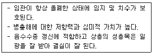
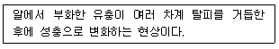
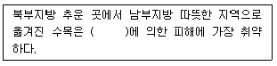
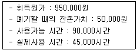
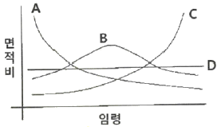

산림산업기사 (2020-06-06 기출문제)
1과목: 조림학
1. 가지치기의 장점이 아닌 것은?
- 부정아 발생
- 무절재 생산
- 하층목 생장 촉진
- 산불로 인한 수관화 경감
(정답률: 89%)

2. 종자의 활력을 검사하는 방법이 아닌 것은?
- 절단법
- 양건법
- X-선법
- 효소검출법
(정답률: 74%)
3. 다음 설명에 해당하는 갱신작업 방법은?

- 택벌작업
- 개벌작업
- 산벌작업
- 왜림작업
(정답률: 83%)
4. 단순히 토양 입자의 크기로만 평가했을 때 단위 부피당 토양이 지닌 양이온치환용량이 가장 큰 것은?
- 역토
- 양토
- 식토
- 사토
(정답률: 59%)
5. 종자의 순량률에 대한 설명으로 옳은 것은?
- 종피와 종자 크기에 대한 비율이다.
- 1000개의 종자 무게를 비율로 정한 것이다.
- 충실종자와 미숙종자에 대한 무게의 비율이다.
- 전체 시료종자 무게에 대한 순정종자 무게의 비율이다.
(정답률: 82%)
6. 간벌에 대한 설명으로 옳지 않은 것은?
- 임목을 건전하게 발육시킨다.
- 임분의 형질을 개선하는데 도움을 준다.
- 직경 생장을 촉진시킬 목적으로 실시한다.
- 정량간벌은 수관급의 고려를 하는 것이 가장 중요하다.
(정답률: 69%)
7. 조림지의 풀베기 작업 시기로 가장 적합한 것은?
- 여름철인 6~8월이 좋다.
- 잡초목의 생장이 완료된 늦가을에 실시한다.
- 수목의 수액이 이동하기 전인 4월 이전이 좋다.
- 잡초목의 생장이 시작되는 4~5월에 실시한다.
(정답률: 84%)
8. 임목의 잎에 있는 엽록체가 주로 흡수하여 광합성에 이용하는 광선은?
- 적외선
- 자외선
- 근적외선
- 가시광선
(정답률: 75%)
9. 육모 시 해가림이 필요없는 수종은?
- Pinus rigida
- Larix kaempferi
- Abies holophylla
- Pinus koraiensis
(정답률: 61%)
10. 양분요구도가 가장 낮은 수종은?
- 밤나무
- 소나무
- 오동나무
- 느티나무
(정답률: 80%)
11. 배주에 해당하지 않는 것은?
- 주피
- 자방
- 주심
- 난핵
(정답률: 62%)
12. 자연의 힘으로 이루어진 극상렴의 숲은?
- 보안림
- 열대림
- 원시림
- 동령림
(정답률: 90%)
13. 수목 잎의 기공개폐에 대한 설명으로 옳지 않은 것은?
- 온도가 높아지면 가공이 닫힌다.
- 잎의 수분포텐셜이 낮으면 기공이 열린다.
- 순광합성이 가능한 정도의 광도이면 기공은 충분히 어렵다.
- 엽육 조직의 세포간극에 있는 이산화탄소의 농도가 높으면 기공이 닫힌다.
(정답률: 70%)
14. 묘목 식재 시 낙엽수종의 뿌리 돌림 작업시기로 가장 적합한 것은?
- 4~5월
- 6~7월
- 9~10월
- 11~12월
(정답률: 59%)
15. 모수작업에 가장 알맞은 수종은?
- 잣나무
- 소나무
- 밤나무
- 일본잎갈나무
(정답률: 77%)
16. 콩과 수목으로 비료목인 것은?
- 사시나무
- 오리나무
- 아까시나무
- 보리장나무
(정답률: 75%)
17. 삽수의 발근을 촉진하는 방법으로 식물호르몬 처리에 해당하지 않는 것은?
- 분제 처리법
- 저농도액 침지법
- 증산억제제 처리법
- 고농도 순간침지법
(정답률: 71%)
18. 잣나무의 특성 및 임분 관리 방법에 대한 설명으로 옳은 것은?
- 천연갱신이 잘 이루어진다.
- 식재 후 30~40년경 간벌을 시작한다.
- 토양 수분이 충분한 계곡이나 산복의 비옥지에 식재한다.
- 자연 번식력이 강하므로 어떠한 작업종을 선택하여도 갱신에 지장이 없다.
(정답률: 63%)
19. 산벌작업의 순서로 옳은 것은?
- 전벌→하종벌→종벌
- 예비벌→전벌→종벌
- 하종벌→예비벌→후벌
- 예비벌→하종벌→후벌
(정답률: 87%)
20. 난대림에 분포하는 주요 수종이 아닌 것은?
- 전나무
- 동백나무
- 가시나무
- 후박나무
(정답률: 68%)
2과목: 산림보호학
21. 솔나방이 월동하는 형태는?
- 알
- 유충
- 성충
- 번데기
(정답률: 66%)
22. 병환부에 표징이 가장 잘 나타나는 병원체는?
- 균류
- 세균
- 선충
- 바이러스
(정답률: 63%)
23. 등화유살법으로 해충을 방제할 때 가장 효과적인 광선은?
- 적외선
- 방사선
- 자외선
- 근적외선
(정답률: 57%)
24. 옥시테트라사이클린으로 방제 효과가 가장 큰 수목병은?
- 오동나무 탄저병
- 밤나무 뿌리혹병
- 포플러 모자이크병
- 대추나무 빗자루병
(정답률: 80%)
25. 수화제에 대한 설명으로 옳은 것은?
- 분말이 비산하는 단점을 보완하는 것이다.
- 용제로 석유계, 알코올류 등을 사용한다.
- 물에 희석하면 유효 성분의 입자가 물에 골고루 반산하여 현탄액이 된다.
- 증기압이 높은 농약의 원제를 액상, 고장 또는 압축가으상으로 용기 내에 충전한다.
(정답률: 71%)
26. 수목병과 매개 곤충의 연결이 옳지 않은 것은?
- 뿌리혹병-진딧물
- 소나무 재선충병-솔수염하늘소
- 오동나무 빗자루병-담배장님노린재
- 대추나무 빗자루병-마름무늬 매미충
(정답률: 77%)
27. 수목에 피해를 주는 주요 대기오염 물질이 아닌 것은?
- 오존
- 질소
- 팬(PAN)
- 이산화황
(정답률: 73%)
28. 해충의 생물적 방제방법으로 옳지 않은 것은?
- 잠복소 이용
- 기생벌 이용
- 포식층 이용
- 병원미생물 이용
(정답률: 75%)
29. 모잘록병 방제방법으로 옳지 않은 것은?
- 병든 묘목은 발견 즉시 뽑아 태운다.
- 파종량을 적게 하고 복토를 두텁지 않게 한다.
- 인산질 비료의 과용을 삼가고 질소질 비료를 충분히 준다.
- 묘상의 배수를 철저히 하여 과습을 피하고 통기성을 양호하게 한다.
(정답률: 73%)
30. 밤나무혹벌에 대한 설명으로 옳은 것은?
- 양성생식한다.
- 성충으로 월동한다.
- 1년에 2회 발생한다.
- 천적으로는 긴꼬리좀벌류가 있다.
(정답률: 59%)
31. 방품림을 설치하면 방제 효과가 가장 큰 수목병은?
- 철쭉 떡병
- 소나무 혹병
- 삼나무 붉은마름병
- 낙엽송 가지끝마름병
(정답률: 61%)
32. 오리나무잎벌레의 생태에 대한 설명으로 옳지 않은 것은?
- 성충으로 월동한다.
- 1년에 1회 발생한다.
- 유층만이 수목을 가해한다.
- 노숙 유충은 지피물 아래 또는 흙속에서 번데기가 된다.
(정답률: 74%)
33. 임지에 쌓여있는 낙엽과 지피물, 갱신치수 및 지상 관목 등이 타는 산림화재의 종류는?
- 지중화
- 지표화
- 수관화
- 수간화
(정답률: 75%)
34. 흰가루병균이 속하는 분류군은?
- 조균
- 자낭균
- 담자균
- 접합균
(정답률: 63%)
35. 다음 설명에 해당하는 것은?

- 주성
- 휴면
- 생식
- 변태
(정답률: 85%)
36. 수목의 표피를 직접 뚫고 침입하는 병원균이 아닌 것은?
- 잣나무 털녹병균
- 묘목의 모잘록병균
- 아밀라리아뿌리썩음병균
- 뽕나무 자줏빛날개무늬병균
(정답률: 57%)
37. 소나무좀 방제방법으로 옳지 않은 것은?
- 등화로 유살한다.
- 기생성 천적을 보호한다.
- 피해 입은 소나무를 제거한다.
- 피해 입은 먹이 나무를 박피한다.
(정답률: 62%)
38. 다음 ()안에 해당하는 것은?

- 조상
- 만상
- 상고
- 동상
(정답률: 77%)
39. 흡즙성 해충이 아닌 것은?
- 진딧물류
- 나무이류
- 나무좀류
- 깍지벌레류
(정답률: 62%)
40. 포플러 잎녹병 방제 방법으로 포플러 묘포지에서 가장 멀리해야 하는 수종은?
- 향나무
- 배나무
- 신갈나무
- 일본잎갈나무
(정답률: 62%)
3과목: 임업경영학
41. 우리나라 공ㆍ사유림의 경영계획 작성을 위한 임반의 크기 기준은?
- 1.0ha 이내
- 1ha 이내
- 10ha 이내
- 100ha 이내
(정답률: 58%)
42. 임목 원가라고도 하며 간벌 이전의 유령 임목에 대한 가격 산정에 적용할 수 있는 것은?
- 임지기망가
- 임목기망가
- 임목비용가
- 임목매매가
(정답률: 72%)
43. 단목의 연령측정 방법이 아닌 것은?
- 기록에 의한 방법
- 목측에 의한 방법
- 생장추를 이용한 방법
- 표본목령에 의한 방법
(정답률: 53%)
44. 임업자본 중에서 유동자본에 해당하는 것은?
- 임도
- 조림비
- 벌목기구
- 제재소 설비
(정답률: 69%)
45. 다음 조건에 해당하는 기계톱의 작업시간비례법에 의한 감가상각비는?

- 225,000원
- 250,000원
- 350,000원
- 450,000원
(정답률: 65%)
46. 이율이 높아짐에 따라 임지기망가의 변화로 옳은 것은?
- 커진다.
- 작아진다.
- 일시적으로 작아졌다가 다시 커진다.
- 일시적으로 커졌다가 다시 작아진다.
(정답률: 71%)
47. 임업조수익의 계산 항목에 포함되지 않는 것은?
- 임목성장액
- 임업현금수입
- 임업현금지출
- 미처분 임산물 증감액
(정답률: 56%)
48. 중령림의 임목을 평가하는 방법으로 가장 적합한 것은?
- Glase법
- 비용가법
- 기망가법
- 매매가법
(정답률: 75%)
49. 수확표의 주요 용도가 아닌 것은?
- 지위 판정
- 지리 판정
- 경영성과 판정
- 장래의 생장량과 수확량 예측
(정답률: 55%)
50. 임가소득 4억원이고 임업소득이 1억 2천만원인 경우 임업의존도는?
- 3%
- 4%
- 30%
- 40%
(정답률: 70%)
51. 경급을 구분하는 기준으로 옳은 것은?
- 치수:흉고직경 8cm미만
- 소경목:흉고직경 8~16cm
- 중경목:흉고직경 18~28cm
- 대경목:흉고직경 50cm 이상
(정답률: 68%)
52. 부가가치가 가장 낮은 주업적 임업경영의 업무 순서로 옳은 것은?
- 식재→육림→입목매각
- 식재→육림→벌채→원목매각
- 식재→육림→벌채→원료원목공급(제지)
- 식재→육림→벌채→표고생산ㆍ제탄ㆍ제재
(정답률: 58%)
53. 임지의 생산능력을 나타내는 지위와 연관성이 가장 큰 것은?
- 직경생장
- 수고생장
- 수관생장
- 이용고생장
(정답률: 65%)
54. 신림기본계획 수립 및 시행에 포함되지 않는 사항은?
- 지역산림 협력에 관한 사항
- 산림시책의 기본목표 및 추진방향
- 산림의 공익기능 증진에 관한 사항
- 산림자원의 조성 및 육성에 관한 사항
(정답률: 70%)
55. 벌채목의 원구와 말구의 단면적을 평균한 단면적을 사용하는 재적을 산출하는 방법은?
- 4분주식
- 후버(Huber)식
- 뉴톤(Nweton)식
- 스말리안(Smalian)식
(정답률: 64%)
56. 입목의 간재적이 0.8m3이고 벌채 조재 후 원목 재적은 0.65m3일 때 조재율은?
- 약 8%
- 약 12%
- 약 81%
- 약 123%
(정답률: 63%)
57. 법정상태를 위한 구비조건이 아닌 것은?
- 법정생장량
- 법정수확률
- 법정영급분배
- 법정임분배치
(정답률: 69%)
58. 측고기를 이용하여 수고를 측정할 때 주의사항으로 옳지 않은 것은?
- 수목의 높이보다 가까운 거리에서 측정하면 오차를 줄일 수 있다.
- 측정하고자 하는 수목의 정단과 밑이 잘 보이는 지점에서 측정하여야 한다.
- 경사진 곳에서는 오차가 생기기 쉬우므로 사능하면 등고선 방향에서 측정한다.
- 측고기의 종류에 따라 사용 방법이 다르기 땨문에 측고기 사용법을 숙지하는 것이 오차를 줄일 수 있는 방법이다.
(정답률: 79%)
59. 다음 4가지 형태의 산림구조 중에서 수입이 가장 적고 투자가 가장 많은 것은?

- A
- B
- C
- D
(정답률: 76%)
60. 재적수확 최대의 벌기령에 해당하는 경우는?
- 등귀생장이 최대일 때
- 형질생장이 최대일 때
- 화폐수익이 최대일 때
- 벌기평균생장량이 최대일 때
(정답률: 72%)
4과목: 산림공학
61. 임도의 비탈면 붕괴가 우려되는 경우로 가장 거리가 먼 것은?
- 연약한 지반에 흙쌓기한 경우
- 투수성의 불연속면을 절취한 경우
- 미끄러지기 쉬운 급경사면에 흑쌓기한 경우
- 침투수에 의하여 성토 내부의 간극수압이 낮은 경우
(정답률: 70%)
62. 산지사방에서 분사식 씨뿌리기공법으로 시공시에 초본의 발아생립본수 기준은?
- 100본/m2
- 200본/m2
- 1,000본/m2
- 2,000본/m2
(정답률: 56%)
63. 적정임도밀도가 40m/ha인 임도에서 평균집재거리는?
- 25m
- 31.25m
- 40m
- 62.5m
(정답률: 48%)
64. 밑판, 종자, 표면덮개의 3부분으로 구성된 녹화용 피복자재는?
- 식생대
- 식생반
- 식생자루
- 식생매트
(정답률: 66%)
65. 중심선측량과 역선측량의 편차가 많이 발생하는 지역은?
- 계곡부, 능선부
- 능선부, 정상부
- 사면부, 계곡부
- 정상부, 사면부
(정답률: 66%)
66. 산지사방의 녹화공사에 해당되는 것은?
- 단쌓기
- 격자틀붙이기
- 콘크리트블록쌓기
- 콘크리트뿜어붙이기
(정답률: 53%)
67. 해안사방에서 조기에 수렴화를 유도하기 위해 밀식하는 경우 1ha당 가장 적당한 본수는?
- 상층 : 1,000본, 하층 : 3,000본
- 상층 : 2,000본, 하층 : 3,000본
- 상층 : 1,000본, 하층 : 5,000본
- 상층 : 2,000본, 하층 : 5,000본
(정답률: 61%)
68. 임도 설계업무의 순서로 옳은 것은?
- 예비조사-답사-예측-설계도작성-실측-공사수량산출-설계서작성
- 예비조사-답사-예측-실측-설계서작성-공사수량산출-설계도작성
- 예비조사-답사-예측-실측-설계도작성-공사수량산출-설계서작성
- 예비조사-답사-예측-실측-설계도작성-설계서작성-공사수량산출
(정답률: 56%)
69. 유량 산정 시 합리식을 적용했을 때 유출계수 값으로 옳지 않은 것은?
- 산지하천 : 0.75~0.85
- 평지 소하천:0.45~0.75
- 기복이 있는 토지와 수림:0.75~0.90
- 유역의 반 이상이 평탄한 대하천:0.50~0.75
(정답률: 53%)
70. 임도시공 시 정지작업에 사용되는 장비가 아닌 것은?
- 불도져
- 파워 셔블
- 모터 그레이드
- 스크레이퍼 도져
(정답률: 58%)
71. 임도의 노체 구성 및 시공방법에 대한 설명으로 옳은 것은?
- 노상토는 조림토보다 세립토가 좋다.
- 보조기층의 두께는 15cm 이상으로 한다.
- 종단 기울기가 8% 이하인 모든 구간은 자갈이나 콘크리트 포장을 하지 않아도 된다.
- 기층을 생략하거나 자갈층 위에 기층을 두고 표층을 3~4cm 두께로 시공하는 것을 표면처리라고 한다.
(정답률: 38%)
72. 뒷길이, 접촉면의 폭, 뒷면 등이 규격에 맞도록 지정하여 깬 석재는?
- 견치돌
- 부순돌
- 호박돌
- 야면석
(정답률: 80%)
73. 가선형 집개기계가 아닌 것은?
- 윈치
- 포워더
- 타워야더
- 케이블 크레인
(정답률: 56%)
74. 임도 비탈면 수직 높이가 2.5m이고, 수평가리가 5m일 때의 비탈면 기울기는?
- 1:2
- 2:1
- 1:2.5
- 2.5:1
(정답률: 70%)
75. 기선집재와 비교한 트랙터집재의 특징이 아닌 것은?
- 기동성이 높다.
- 작업생산성이 높다.
- 급경사지 작업이 가능하다.
- 산림환경에 대한 피해가 크다.
(정답률: 76%)
76. 유면적이 60km2이고, 비유량이 12m2/s/km2일 때 최대홍수유량은?
- 36m3/s
- 72m3/s
- 360m3/s
- 720m3/s
(정답률: 69%)
77. 임도설치 관련 규정에 의한 임도의 종류에 포함되지 않은 것은?
- 사설임도
- 단체임도
- 공설임도
- 테마임도
(정답률: 65%)
78. 임목수확작업 과정에 해당되지 않는 것은?
- 간재
- 집재
- 조재
- 목재
(정답률: 42%)
79. 임도의 대피소 설치기준으로 옳지 않은 것은?
- 너비:5m 이상
- 간격:300m 이내
- 유효길이:15m 이상
- 종단 기울기:7% 이하
(정답률: 64%)
80. 선떼붙이기 작업 시 일반적인 단끊기의 너비와 발디딤의 너비를 모두 올바르게 나열한 것은?
- 단끊기:30~45cm, 발디딤:10~20cm
- 단끊기:30~45cm, 발디딤:20~23cm
- 단끊기:50~70cm, 발디딤:10~20cm
- 단끊기:50~70cm, 발디딤:20~30cm
(정답률: 54%)